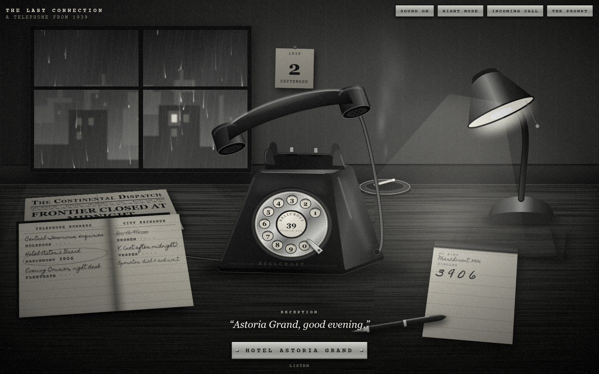
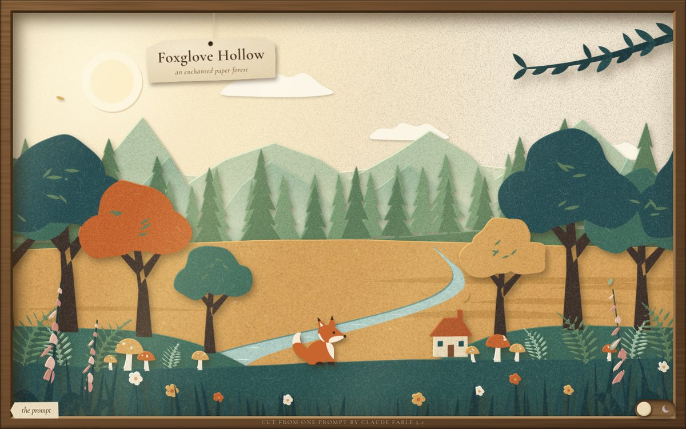
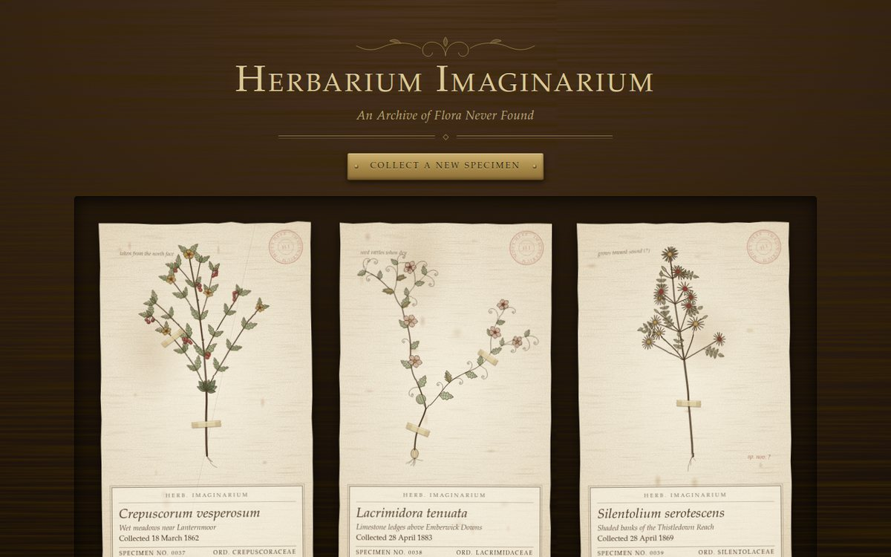
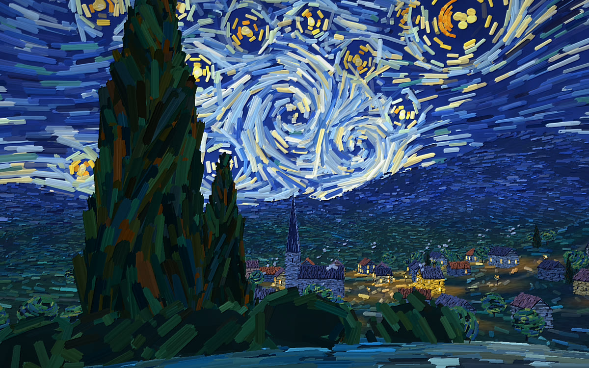
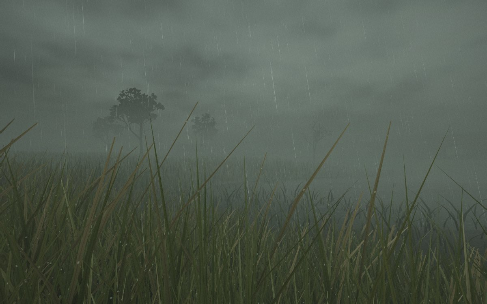
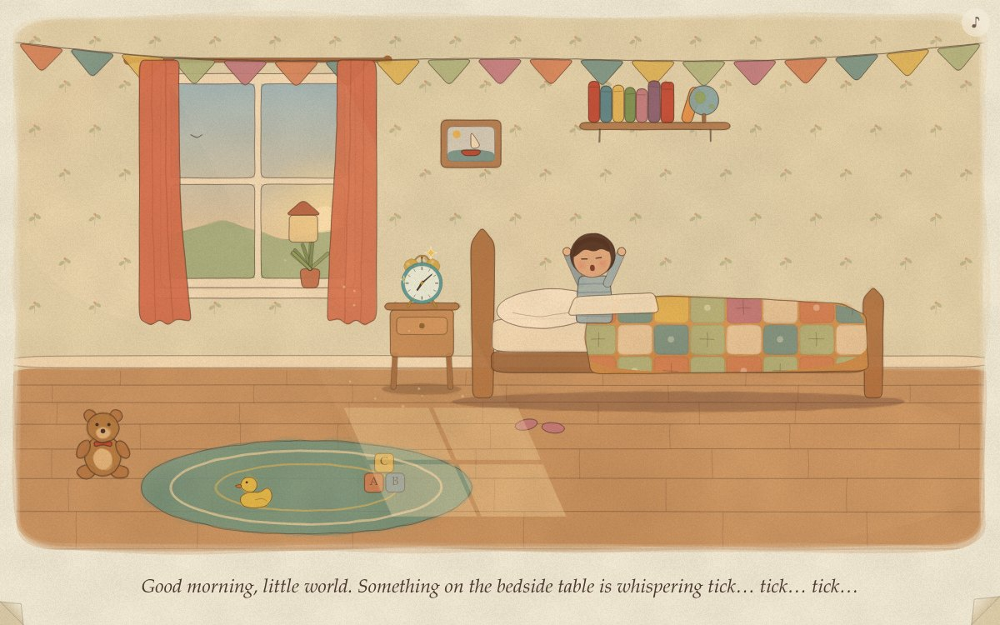

Seven prompts, seven pages
Each page below was built by Claude Fable 5.2 from one prompt. Each is a single HTML file with its CSS and JavaScript inline, no images and no build step. The full prompt is on every page, so you can compare what was asked with what came back.

The Last Connection
A 1939 rotary telephone. Lift the receiver, pick a number from the directory and drag the dial round to the stop. Pull it part of the way and it sends fewer pulses, like the real mechanism. Every sound is synthesised in the browser.
Open the office
Foxglove Hollow
A paper-cut forest in a shadow box, nine sheets deep. Move the pointer to look around inside it, press the fox to make it hop, and slide the switch for night. On a tall screen the scene is cut again to fit.
Open the box
Herbarium Imaginarium
A Victorian cabinet of plants that never existed. Each one is grown by an L-system from a numeric seed and drawn stroke by stroke. Collect a new specimen, examine it under a brass loupe, or press it flat.
Open the cabinet
Inside the Starry Night
Van Gogh's painting as a place you can walk through. It opens on the view he painted; turn round and there is a wheat field, a pond, an olive grove and the asylum window he looked out of. Everything is brushstrokes, about 130,000 of them, and the sky keeps moving.
Step inside
The Silence Between Raindrops
A walk through tall wet grass on a cold evening, with nothing to do there. Rain, fog, shallow pools, a few trees in the mist and thunder far off. Look straight up and the rain falls towards you and beads on the lens. The rain, wind, thunder and footsteps are all synthesised in the browser.
Step into the rainThe Ocean Above the Clouds
A walk across shallow water that mirrors a pastel sky, with nothing to do there. Look straight down and clouds drift thousands of metres under your feet. Floating islands carry silver trees and waterfalls, each step leaves rings, and now and then something very large swims past far below. The wind, water and distant calls are synthesised in the browser.
Open your eyes
A Little Day of Wonder
A painted picture book about a six-year-old's morning. Turn the hands of the alarm clock and the sunlight crosses the bedroom. Lift the front of the toaster to see the wires glow, change the traffic lights, peel back the street, and throw a ball that shows its own gravity and speed. Every painting and sound is made in the browser.
Open the book